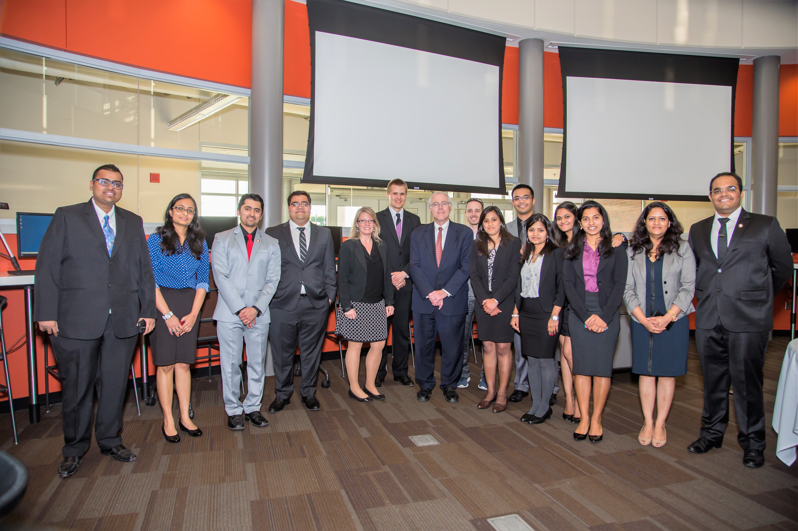
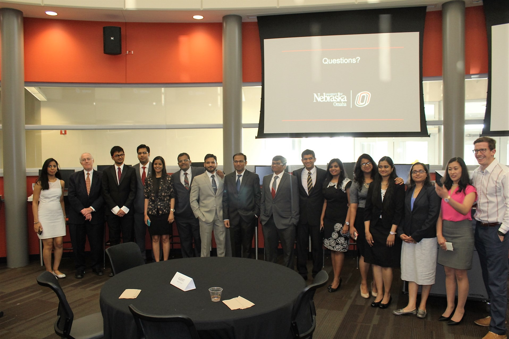
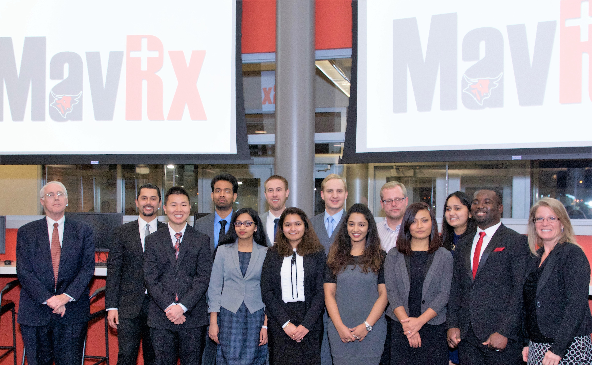
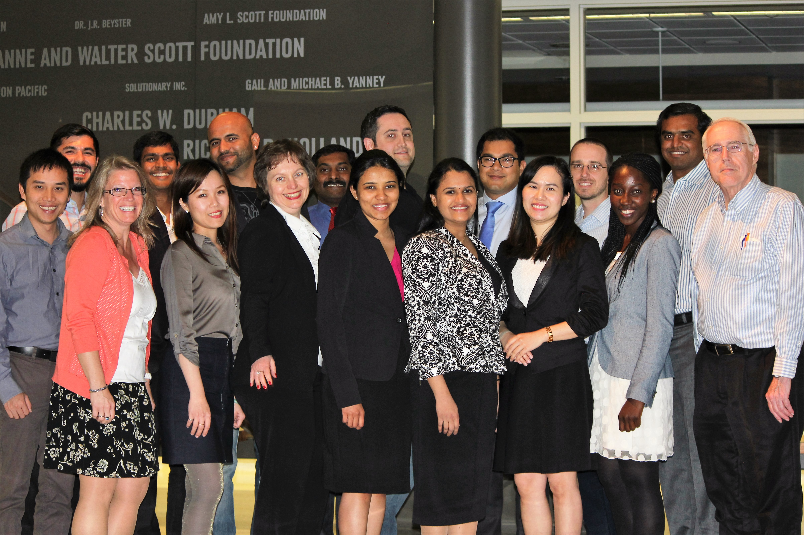

Client: Douglas County Emergency Management Agency (DCEMA) and DOTComm
Project: the UNO MavConnect team worked with the DCEM and DOTComm to select a chat tool and then used it to develop a mobile friendly “Livelog” chat application to assist coordinators and first responders coordinate activities during an emergency.
Client: Partnership for Kids
Project: The UNO MavRaptors team worked with the Partnership for Kids organization to add three major enhancements to an existing student reporting application. These enhanced features included a student staff alerting function using text messaging, an easy to use attendance features that can be done on smart phones and a survey features.
Client: Douglas County Department of Health and DOTComm
Project: The UNO MavRx team worked with the Douglas County Health Department and DotComm to develop ‘Patient Tracking System’ to be used during disaster or other emergency situations.
Client: University of Nebraska College of Nursing
Project: The UNO MavMailers team worked with the UNMC College of Nursing to develop an easy to use and manage Mass Electronic Mailing Application that can be used all departments within the College of Nursing.
